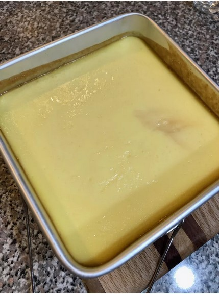

Bahn Flan (Vietnamese Flan)

Description
FLAN RECIPE THAT I WILL DEFINITELY TRY WITH MY INSTANT POT
Ingredients
- 2 cups milk
- 1 ⅔ cups white sugar, divided
- 4 large eggs
- 1 large egg yolk
- ~optional~1 teaspoon vanilla extract
Steps
- Warm milk in a saucepan over medium heat. Add 2/3 cup sugar and stir to dissolve, about 3 minutes. Make sure milk does not boil; turn off heat if necessary.
- Whisk eggs and egg yolk by hand; do not overmix. Pour slowly into the warm milk-sugar mixture and stir continuously over low heat for 1 1/2 minutes.
- Strain through a tightly woven mesh strainer into a bowl to remove any solids that may have formed. Add vanilla extract to the bowl; mix until well combined. Set aside.
- Pour 1 cup sugar into a wide skillet over medium heat. Stir occasionally with a wooden spoon until sugar has evenly melted and turned a golden caramel color, about 5 minutes. Immediately remove from heat and pour into a pressure cooker-safe cake pan, coating the bottom with liquid sugar. Pour in custard. Cover tightly with aluminum foil.
- Place a trivet in the bottom of a multi-functional pressure cooker (such as Instant Pot®) and add 1 cup water. Place the cake pan onto the trivet and close and lock the lid. Seal the valve and select high pressure according to manufacturer's instructions; set timer for 9 minutes. Allow 10 to 15 minutes for pressure to build.
- Release pressure using the natural-release method according to manufacturer's instructions, for 10 minutes, then turn the valve to Venting to release remaining pressure. Unlock and remove the lid. Remove the trivet and pan.
- Allow to cool for 1 hour, then chill for at least 3 to 4 hours, or overnight. Slide knife carefully around the edges and hold the bottom securely as you invert onto a large serving dish; the caramel should drip over the flan and onto the plate.
Back to main page